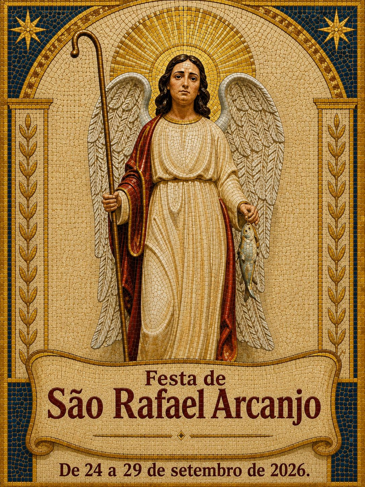
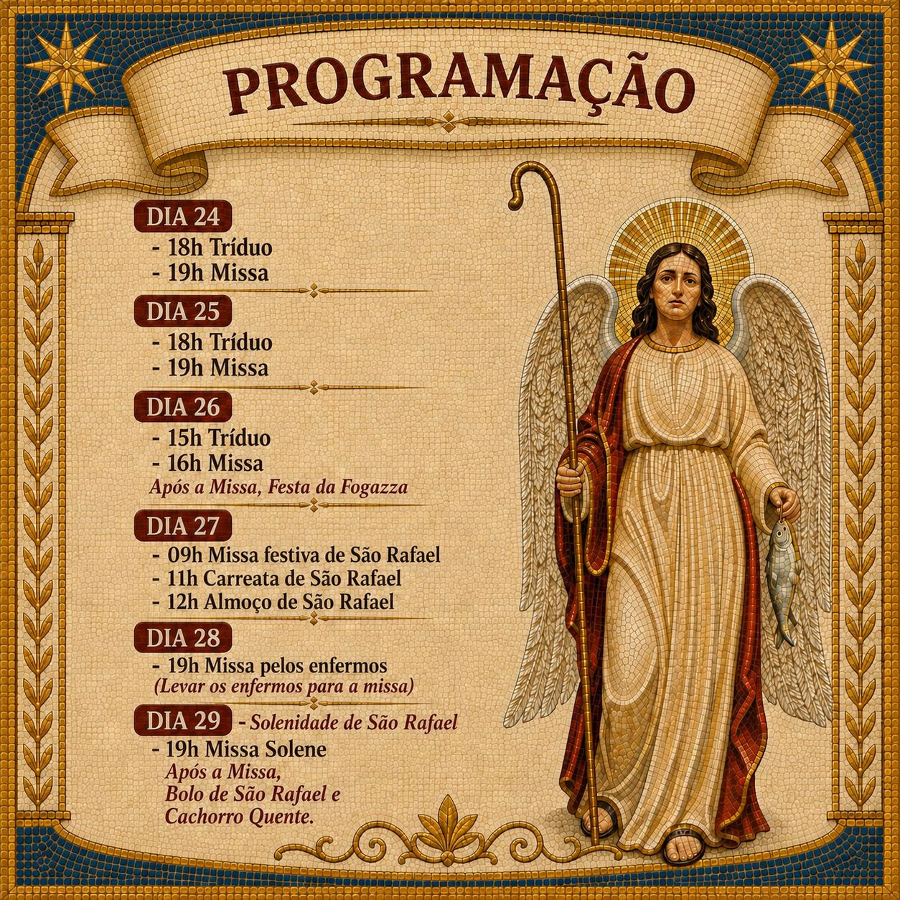
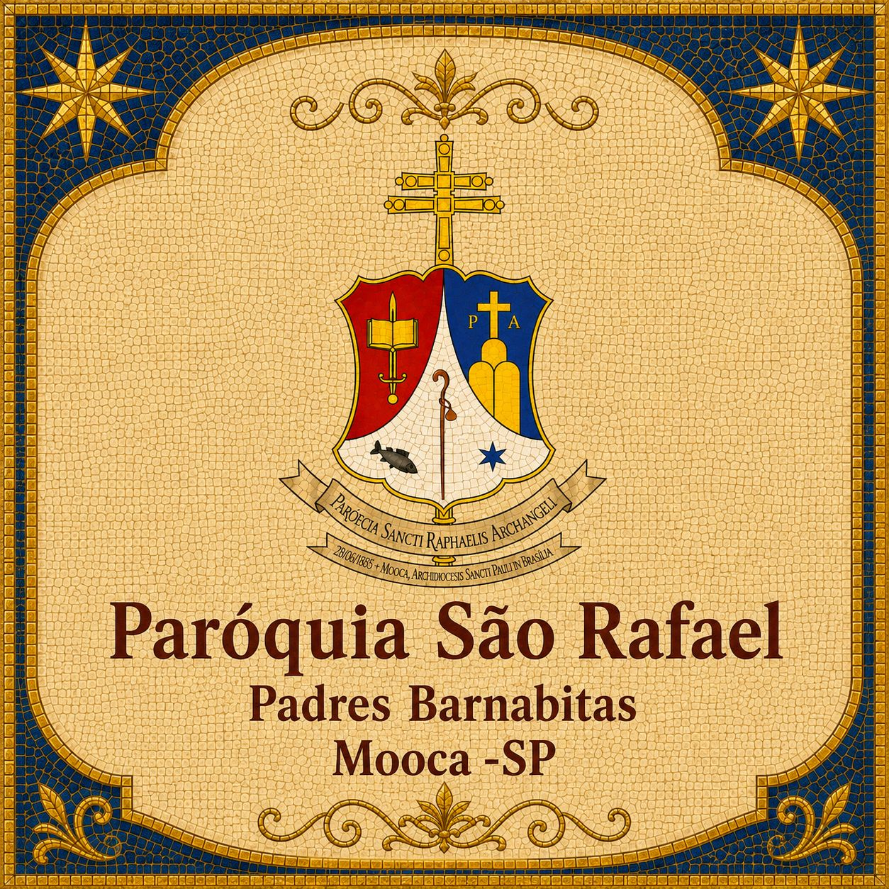
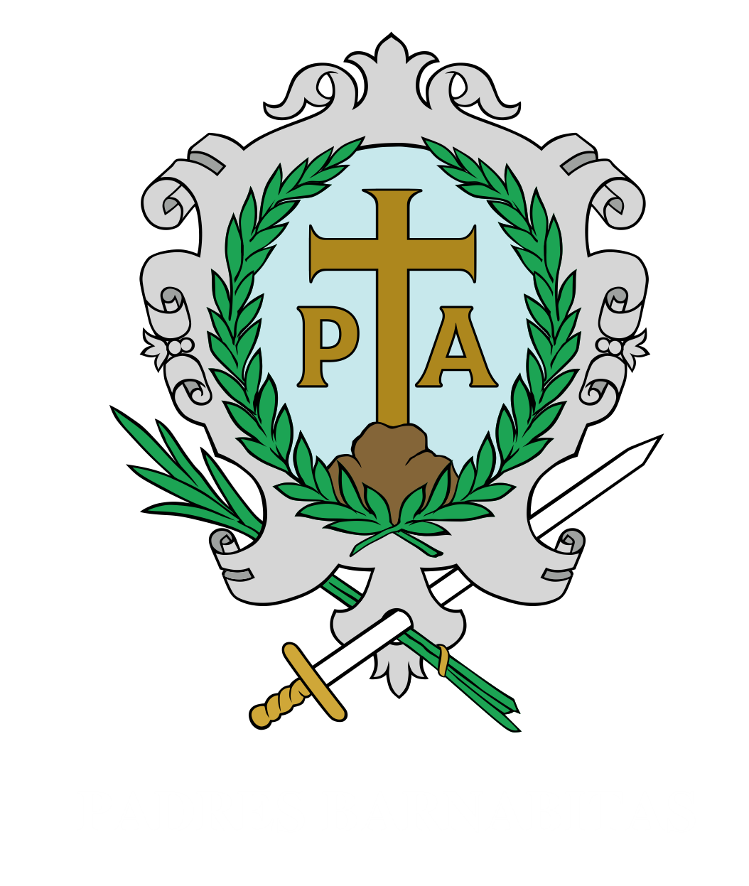

Missas da Semana
Domingos
07h3009h0011h0018h00
Segunda-feira
16h0019h00
Terça-feira a Sexta-feira
19h00
Sábados
16h00** Após a missa: reza do terço (Cenáculo).

Confira os horários e venha celebrar conosco. Sua presença é muito bem-vinda em nossa comunidade.
Domingos
07h3009h0011h0018h00
Segunda-feira
16h0019h00
Terça-feira a Sexta-feira
19h00
Sábados
16h00** Após a missa: reza do terço (Cenáculo).
1ª Terça-feira do mês
19h0020h00*
* Às 20h00: Missa de Cura e Libertação.
1ª Sexta-feira do mês
16h0019h00
1º Sábado do mês
07h3016h00
Missa de São Rafael
Bênção da Saúde e Unção
Dia 29 do mês. Exceto em dias úteis sem solenidades, sábados e domingos.
Quintas-feiras
16h00às18h00
* Horários com observações importantes.
Endereço: Largo São Rafael, s/n - Mooca, SP



De 24 a 29 de setembro de 2026.
Atendimento: Segunda a Sexta, das 08h00 às 19h30 | Sábado, das 08h00 às 17h00.
Paróquia São Rafael
Bairro/Cidade: Mooca - SP
Endereço: Largo São Rafael, s/n - Mooca
Formação de crianças, adolescentes e famílias para a vida sacramental e comunitária.
Serviço de conscientização e acolhimento dos dizimistas para o sustento da missão paroquial.
Organização das celebrações, leitores, ministros e equipes que servem ao altar.
Ações de caridade e assistência fraterna em favor dos irmãos em situação de vulnerabilidade.
Planejamento e execução de encontros, festas e atividades que fortalecem a vida comunitária.
Espaços de espiritualidade, convivência e formação para os jovens da paróquia.
Para inscrições e orientações sobre preparação de pais e padrinhos, procure a secretaria paroquial.
As turmas de preparação catequética e a documentação necessária são informadas na secretaria.
Jovens e adultos interessados devem buscar a secretaria para datas de inscrição e cronograma formativo.
As confissões acontecem às quintas-feiras, das 16h00 às 18h00. Em períodos especiais, consulte a secretaria para horários adicionais.
Casais devem agendar atendimento na secretaria para orientações, documentos e preparação matrimonial.
O dízimo é uma expressão de gratidão a Deus e compromisso com a evangelização, com a manutenção da casa paroquial e com as ações sociais da comunidade.
A Pastoral do Dízimo atende em todas as missas. Ao fundo da igreja, há a sala da pastoral para acolhimento e orientações.
Chave PIX: +5511989606943
A Paróquia São Rafael Arcanjo, na Mooca, está ligada à formação urbana e industrial do bairro. Em 1935, os Padres Barnabitas assumiram a evangelização da região, marcada por forte presença de famílias operárias e imigrantes.
Em junho de 1937, foi lançada a pedra fundamental da igreja no Largo São Rafael, com conclusão das obras na década de 1950. A partir de 1965, a paróquia ampliou sua ação social com o Centro Social e a creche Nossa Senhora da Divina Providência.

Por inspiração de Santo Antônio Maria Zaccaria, os Barnabitas cultivam uma espiritualidade de renovação da vida cristã, formação contínua e serviço missionário. Os pioneiros na Mooca foram os padres Savino Agazzi, José Lanzi e o irmão José de Araújo Goes.
A arquitetura da igreja, em estilo gótico moderno, reforça esse legado com linhas verticais marcantes, torre sineira integrada e vitrais que favorecem o clima de oração na nave principal.
São Rafael é um dos três arcanjos citados na tradição bíblica e seu nome significa "Deus cura". No Livro de Tobias, ele aparece como companheiro de caminho, protetor e mensageiro da providência divina, conduzindo com segurança os passos de quem confia em Deus.
A devoção a São Rafael inspira nossa paróquia a viver a fé com acolhimento, cura espiritual e caridade. Sob sua intercessão, pedimos a graça de cuidar das famílias, dos enfermos e de todos os que buscam consolo, orientação e esperança.